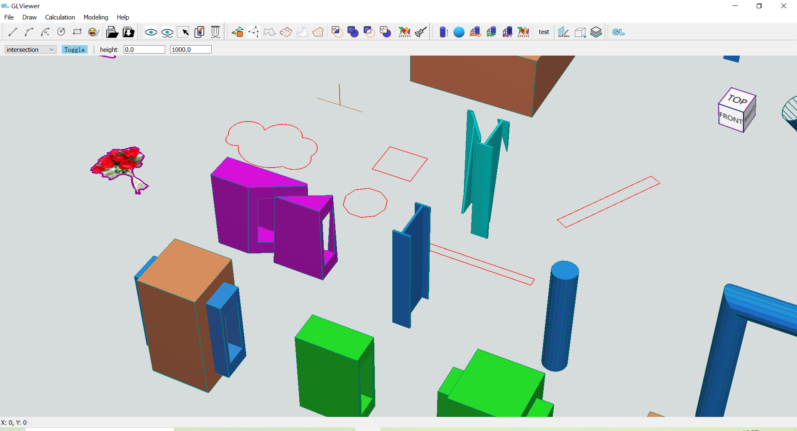

修炼自我，拥抱工业软件潮流
课程介绍
课程将分为上下两部分，《拥抱工业软件潮流：从零开发一款三维CAD软件(上)》和《拥抱工业软件潮流：从零开发一款三维CAD软件(下)》（以下简称《课程上》和《课程下》），其中先期编写的《课程上》主要讲解三维CAD的通用基础部分，包括：
Important
- 环境搭建、
CMake，OpenGL和QT基础知识、渲染管线知识； - 相机、UI界面、场景元素绘制（工作平面、viewCube、旋转中心标识、鼠标吸附标识）、多种类型线绘制、图片绘制；
- 框架结构讲解、预览效果、参数命令系统；
- 选中效果、设置工作平面、框选（两种方式）、复制、删除、显示和隐藏；
- 图层管理、线框模式、关于、线数据文件打开和保存、其他事项（中文显示、版本信息等）、工具类等内容。
在《课程上》学习前，需要读者有一定的C++编程基础，这是必要条件，而如下是建议性的，在课程的基础篇的3.关于OpenGL和5.坐标系统等章节也会有介绍；
- （建议）熟悉
OpenGL基础知识，了解渲染管线的概念和工作机制； - （建议）对仿射变换矩阵原理和使用有基本的了解；
至于QT，如果此前有过QT使用和编程经验更好，没有的话影响也不大，课程会有对应的操作讲解。
Important
《课程下》还在整理工作中，敬请期待。
友情提示
- 可点击顶部菜单栏
目录菜单项查看本课程详细的章节信息，也可快速的切换课程章节； - 可点击
上一节或下一节菜单项快速跳转到上节或下节课程。
GLViewer介绍
GLViewer是一款基于QT，OpenGL和CGLib技术，使用C++语言开发的三维CAD软件，通过分层架构和模块封装组合的框架设计，使其具有轻量、高效、易用和易于维护扩展的特点。

下文将对GLViewer功能进行较为详细的介绍，注意功能介绍涵盖《课程上》和《课程下》中的内容。
显示
二维和三维数据的展示，包括多种线数据、轮廓、图片、三维实体、边线、纹理贴图、文字、填充以及计算结果的展示，且提供实体模式和线框模式两种展示方式。
支持工作平面的设置和显示；
相机和场景交互
通过鼠标控制的相机系统，可便捷的进行场景移动、放缩、旋转等交互；
漫游：可使用WASD按键进行场景漫游；
视图立方体
提供视图立方体（viewCube）可方便进行视角的标识和切换；
画线
可交互式进行线、多段线、两种方式圆弧、圆、矩形的绘制；支持在三维空间中进行绘制；
预览：在绘制过程中提供效果预览，提高绘制效率；
捕捉：支持点捕捉；
正交模式：支持正交模式的开启和关闭，方便绘制规则元素；
命令和参数驱动系统
命令和参数驱动：支持命令和参数驱动进行元素的绘制，提高效率和精确性，更加灵活易用；
在命令状态下支持操作提示的引导；
线数据文件读取和保存
读取：支持读取目标结构的线数据文件，方便数据的导入；
保存：支持将当前场景中绘制的线数据进行保存，方便数据的备份和应用；
注意：
支持图层数据的读取和保存；
显示控制
- 模型显隐：支持模型的显示/隐藏切换；
- 线显隐：支持线数据的显示/隐藏切换；
- 框选：支持框选绘制的线数据，以进行其它操作，如删除、复制、计算等；
- 复制：支持选中构件或线的复制，同样支持交互式和命令参数驱动；
- 删除线：支持删除选中的线；
多种类型计算
注意：
本节中的各种计算调用了CGLib提供的图形几何算法接口，并基于此进行功能实现；
CGLib目前并非开源项目，其由哈市雪花开发和维护，有需要可联系作者。
- 轮廓提取：提供轮廓识别提取功能，可在空间线集合中自动识别提取闭合的
最小单元轮廓； - 网格剖分：提供网格剖分功能，基于
CGLib提供的耳切法网格剖分，支持任意多边形轮廓的网格化，这意味着轮廓可以是嵌套岛洞的； - 凸分割：提供轮廓凸分割功能，基于
CGLib提供的轮廓凸分割算法接口，支持任意多边形轮廓，这意味着轮廓可以是嵌套岛洞的； - 凸包计算：提供线数据的凸包计算功能；
- 紧密外轮廓计算：提供线集合、图片的紧密外轮廓计算，其中对于图片使用了
OpenCV库进行线数据的提取，进而作为输入数据进行图片的紧密外轮廓计算； - 轮廓铺装：提供任意轮廓铺装功能，基于
CGLib提供的轮廓铺装算法接口，支持任意多边形轮廓，这意味着轮廓可以是嵌套岛洞的； - 轮廓布尔运算：提供轮廓的布尔操作，包括并集、交集、差集的计算，支持2个任意多边形轮廓，这意味着轮廓可以是嵌套岛洞的；
- 清理计算结果：支持对计算结果数据进行清理，便于继续绘制、重新计算或进行其它类型的计算；
- 支持文字标签尺寸自动适配，便于不同尺寸轮廓的标记；
造型
注意：
本节中的各种计算调用了CGLib提供的图形几何算法接口，并基于此进行功能实现；
CGLib目前并非开源项目，其由哈市雪花开发和维护，有需要可联系作者；
造型：提供拉伸体创建、球布置功能；
布尔运算：提供三维实体的布尔运算功能，包括并集、交集、差集的操作，
- BRep布尔运算；
- BSP布尔运算；
- Oct八叉树布尔运算；
注意：
如上文提到的GLViewer易于维护和扩展的特点，用户可继续基于GLViewer进行更多实用功能的开发，如搭建构件库、支持更多类型构件的布置建模、开发集自动布置和算量的更多家装功能，甚至开发一款可用于实际工作的钢结构建模软件，当然也需要比较持久的投入。
图层管理
支持图层的新建、删除、激活、颜色编辑；
关于
可展示关于软件和作者的更多信息，便于交流和发展。
友情提示
- 可点击顶部菜单栏
目录菜单项查看本课程详细的章节信息，也可快速的切换课程章节； - 可点击
上一节或下一节菜单项快速跳转到上节或下节课程。